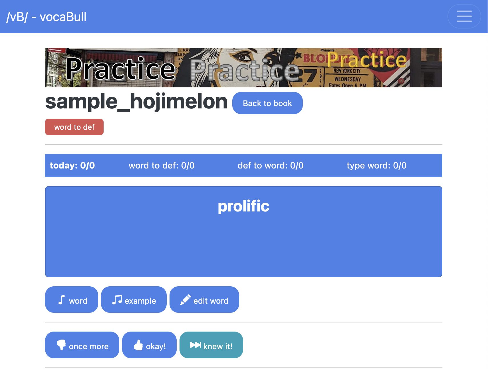

Table of Contents
1. はじめに
1.1. 英語で苦労しています
アメリカに住んでそろそろ計7年になりますが、今でも英語ではとても苦労しています。日本にいたときはマニアックに英語を勉強して、教養あるネイティブレベルを目指したつもりでしたが、実際にこちらで仕事をしてみると、圧倒的な英語力不足を感じます。
特にリスニングに困っています。アクセントのある非ネイティブの速い英語が聞き取れないし、ドラマや映画を見ても、ずっと字幕を読んでいるという情けない状況です。
これというのも、私のしてきた英語の勉強が、音声を重視しない文字中心だったことの弊害だと思っています。そもそも学校の英語教師が使うのが、アメリカ等には無いニセモノ英語ですからね。最近は少しは改善されているのでしょうか。。。
1.2. どうして日本語を使う?
日本では英語を学ぶのに、日本語を使いますよね。最高レベルなはずの英検1級向けのパス単という単語集(よくできています)も意味は日本語で書かれています。どうして英語単語 - 英語意味 - 英語サンプルセンテンスというようにならないのでしょうか。
答えは(おわかりと思いますが)、「よくわからない/ピンと来ないので覚えられない」ためです。しかし、ここで妥協してはいけません。"<単語> meaning"などで検索してより自分にしっくりくる意味を見つけてそれを覚えるようにしたり、vocabulary.com の分かりやすい説明を読んだりする等の工夫が必要です。それでも意味が理解できずにどうにもならない場合は、英語の意味とセットで日本語の訳語を入れておくといいでしょう。わたしもたまにやります。
そもそも、日本などからアメリカに来た子どもたちは、ESLとはいえ、英語で英単語を覚えていくのですからね。それでできない理由は無いはずです。日本語を介して英語の勉強をすると、かけている時間の半分くらいは日本語を使っていることになっていると思います。実に非効率的で、もったいないです。
今更学校教育は変えられませんが、英検準1級レベルになったら英語のみで英語を学ぶように切り替えるべきと今では考えています。
1.3. 音がない
英語を学ぶのに、まず正しい音から入らないのも問題です。まず文字から入り、先生のニセモノ英語を聞いて、自分でニセモノ英語を発音して、、、ということを積み上げてしまうと、実際に使われている英語が理解できなくなってしまいます。
英語の参考書を買うと、音声データがダウンロードできたり、CDが付いてきたりするものもありますが、音声はあくまでサブ的な位置づけで、実際にはあまり使われていないのではないでしょうか。普通に考えて、順番が逆ですよね。
例えば hierarchy (ヒエラルキー)という単語を覚えたいとします。文字だけ見て音を聞かないと、なんとなくスペルから「ヒィェラーチィ」みたいな感じで覚えてしまいかねません。が、これをやるとアウトです。これで覚えてしまった単語は聞き取れない(&話しても通じない)し、後でもう一度正しい音を覚え直す羽目になります。最初に正しい音を確認しなかったばっかりに、後々まで悪影響が残ります。
2. Vocabullに読み上げ機能を付けました
長い前置きでしたが、ここからが本題です 笑。
私が作っているVocabullというボキャビル用のWebアプリに、読み上げ(text-to-speech)機能を付けました。
- パソコンやスマホ等からアクセスできます: https://achiwa912.pythonanywhere.com/
- まずはこちらの説明記事からどうぞ: https://achiwa912.github.io/vbs_intro.html (リンク変えました)
Vocabullで単語を覚える練習をしている際に、画面下の方に Pronounce word ボタンが出てきます。これを押すと単語を読み上げてくれます。私もいまだに音を聞いて「そんな音だったのか」となることがよくあります。必ず音を確認するようにしましょう。ブラウザーの SpeechSynthesis 機能を使っているので多少不自然ですが、発音の確認には十分と思います。

というわけで、なかなか便利なのでVocabullをぜひ使ってみてください。もちろん無料です。が、不具合等でデータが全て消えてしまうリスクがあるので、Vocabullのバックアップ機能を使ってください。
Vocabullで単語を覚える際には、以下に気をつけるようにしてみてください。
- 必ず発音を確認する
- Vocabullならスマホからでも、限りなくストレスフリーで確認できます →
Pronounce wordボタンを押すだけ
- Vocabullならスマホからでも、限りなくストレスフリーで確認できます →
- 意味も英語で入れる
- 既存の英単語本などから写してくるだけでなく、覚えやすい意味やよりしっくりくるサンプルセンテンスに変えていくなど、単語帳を「鍛えていく」ことが大事です →
Edit wordボタンをお使いください
- 既存の英単語本などから写してくるだけでなく、覚えやすい意味やよりしっくりくるサンプルセンテンスに変えていくなど、単語帳を「鍛えていく」ことが大事です →
不具合などありましたら、メールで教えていただけると助かります。メールアドレスはこちらのページにあります。https://achiwa912.github.io/pages/about.html